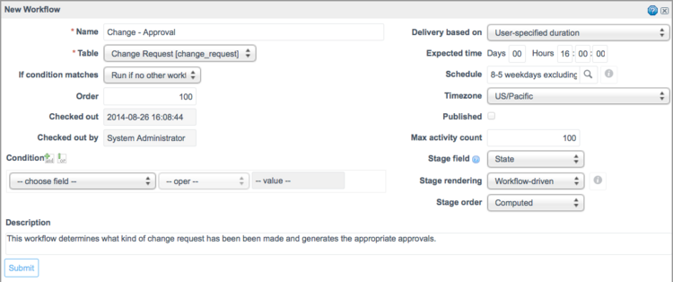

Case Study - Advanced Approval Workflow (Part 1)
Contents
1 Overview
In the ServiceNow platform, there is often more than one way to approach implementing a process. Understanding how to translate a complex business requirement into an efficient in-product process may be tricky. This case study explores one example of approvals for a change process to demonstrate how to take advantage of some of the more advanced functionality to implement a more complex business case.
Business Case
For example, suppose a hypothetical organization wanted to implement the following business case for change requests:
- If the change request is for a routine change, then the usual routine change workflow occurs without extra approvals.
- If the change request is for a comprehensive or emergency change, then the Change Advisory Board (CAB) must approve the change before the usual comprehensive change workflow can occur.
- If the change request is for a comprehensive or emergency change with high or very high risk, then it requires the following approvals:
- The Infrastructure team at the CI's location, the CI's owner, and the CAB
- If the above parties approve, the VP of Infrastructure and the CFO must also both approve
Approvals can be handled either by approval rules or by the workflow engine. The approval rules offer a simpler method for creating approvals and is suitable for one-stage approvals with clear conditions. However, this business case is more suitably executed by a workflow because it includes an approval with multiple stages. All of the approval processes can be defined in one workflow, rather than in three separate approval rules, which will be easier to review and alter in the future.
Part one of this case study demonstrates how to satisfy the first two requirements of the business case, and part two demonstrates how to satisfy the last requirement.
2 Building the Advanced Approval Workflow (Part One)
2.1 Preparing the Routine and Comprehensive Change Subflows
The workflow must trigger the processes for implementing a routine change and a comprehensive change. It is possible to specify these processes in the workflow, but this can lead to an overcomplicated workflow that is difficult to follow visually. Instead, use the predefined Routine Change and Comprehensive Change workflows as subflows. These predefined workflows are included in the Change Management Workflows plugin.
To ensure that the subflows are not triggered twice, set their If Condition Matches property to None.
- Open and check out the Routine Change workflow.
- In the title bar, click the menu icon (gear icon in releases prior to Fuji) and select Properties.
- From the If Condition Matches list, select None.
- Click Update.
- Repeat these steps for the Comprehensive Change workflow.
2.2 Defining the Workflow
The first step in creating the Advanced Approval workflow is to create the workflow and define its properties. The workflow you want to create is a default workflow that takes new change requests and sorts them based on both the type of change (routine vs. comprehensive) and risk of the change (low/medium vs. high/very high). The workflow runs on the Change Request table unless another workflow is attached to the change; this means that when a new change request is saved, this workflow attaches to the record unless the user has specified a particular workflow to process the change.
To define the workflow for the business case above:
- Navigate to Workflow > Workflow Editor and create a new workflow.
- Populate the form with the following information:
- Name: Change - Approval
- Table: Change Request [change_request]
- If condition matches: Run if no other workflows are matched yet
- Stage field: State
- In Fuji, you must submit the workflow, reopen the properties, and click the Stages tab to see the Stage field list.
- Click Submit.
- 
- This workflow is triggered by any new change requests that do not fulfill the conditions of a different workflow. As the workflow passes from activity to activity, it updates the State field, allowing users to track the change request's progress.
- Add activities to define the workflow's behavior.
{kind=link}
2.3 Defining the Routine Change Case
The first business case requirement is that a routine change triggers the Routine Change workflow. The workflow must determine the type of workflow based on the change request's Type field. If the field is a match, it triggers the process for routine changes without any approvals. This requires an If activity to identify routine changes, and then an activity to trigger the Routine Change workflow.
To create the If activity:
- Drag the If activity onto the arrow between Begin and End.
- Populate the form with the following information:
- Name: If Change Is Routine
- Stage: Pending
- Condition: [Type] [is] [Routine]
- Click Submit.
{kind=link}
To add the Routine Change workflow:
- From the Workflows list in the palette, drag the Routine Change workflow into the area below the If Change is Routine activity.
- Submit the form that appears.
- From the If Change Is Routine activity:
- a. Delete the line from the Yes tab to the End activity.
- b. Click the Yes tab and drag to the Routine Change workflow.
- c. Click the No tab and drag to the End activity.
- From the Routine Change workflow, click the Always tab and drag to the End activity.
- The workflow appears like this:
{kind=link}
2.4 Defining the Comprehensive Change Workflow
The next step in the advanced approval process is handling non-routine changes. Comprehensive changes are identified as high risk or non-high risk. If the change is not high risk, an approval for it can be requested from the CAB. If the CAB approves the change, the workflow triggers the Comprehensive Change workflow. If the CAB rejects the change, the change is marked as Rejected and Incomplete before the workflow ends.
The CAB group in this example was created as a new group to illustrate the process. Any group can be used in its place.
To create the If activity that determines if the change is high risk:
- Drag the If activity onto the arrow between the If Change Is Routine and End activities.
- Populate the form with the following information:
- Name: If Change Is High Risk
- Stage: Pending
- Condition: [Risk] [is] [High] OR [Risk] [is] [Very High]
- Click Submit.
{kind=link}
To create the CAB approval activity:
- Drag the Approval - Group activity into the area below the new If Change Is High Risk activity.
- Populate the form with the following information:
- Name: CAB Approval
- Stage: Pending
- Groups: CAB (or the name of the group used to identify your Change Approval Board members)
- Click Submit.
- To trigger the CAB Approval activity for non-high risk activities, click the No tab from the If Change is High-Risk activity and drag to the CAB Approval activity.
{kind=link}
To trigger the Comprehensive Change workflow for changes approved by the CAB:
- From the Workflows list in the palette, drag the Comprehensive Change workflow into the area below the If Change is High Risk activity.
- Submit the form that appears.
- From the CAB Approval activity, click the Approved tab and drag to the new Comprehensive Change workflow.
To set the value of changes rejected by the CAB to Rejected:
- Drag the Set Values activity into the area below the new CAB Approval activity.
- Populate the form with the following information:
- Name: Rejected
- Stage: Complete
- Set these values: From the first choice list, select Approval. From the second choice list, select Rejected.
- Click Submit.
- From the CAB Approval activity, click the Rejected tab and drag to the new Rejected activity.
- From the Rejected activity, click the Always tab and click to the End activity.
{kind=link}
3 Result
The workflow should now look like this:
{kind=link}
This workflow fulfills the first two points of the business case: it triggers the proper approvals and workflow for both routine changes and low-to-medium risk comprehensive changes. To fulfill the third point of the business case, see Part Two.
Contents > Administer > Managing Data > Task Table
Contents > Administer > Service Administration > Approvals
Contents > Administer > Workflow > Workflow Examples